<!doctype html>
<html class="theme-5">
<meta charset="utf-8" />
<link href="../html-slideshow.bundle.min.css" rel="stylesheet" />
<link href="../style.css" rel="stylesheet" />
<script src="https://dbwebb.se/cdn/js/html-slideshow_v1.1.0.bundle.min.js"></script>

<title>Kursen databas</title>

<script data-role="slide" type="text/html" data-markdown class="titlepage center">
# Modellera databas
## Entity Relationship (ER) modellering
### Mikael Roos
</script>


<script data-role="slide" data-markdown type="text/html">
# Agenda

* ER-modellering
* En kokbok
* Steg och faser

<p class="footnote">Från artikeln "Kokbok för databasmodellering" på https://dbwebb.se/kunskap/kokbok-for-databasmodellering.</p>

</script>


<script data-role="slide" type="text/html" data-markdown class="center">
# En modell av en databas

<figure>
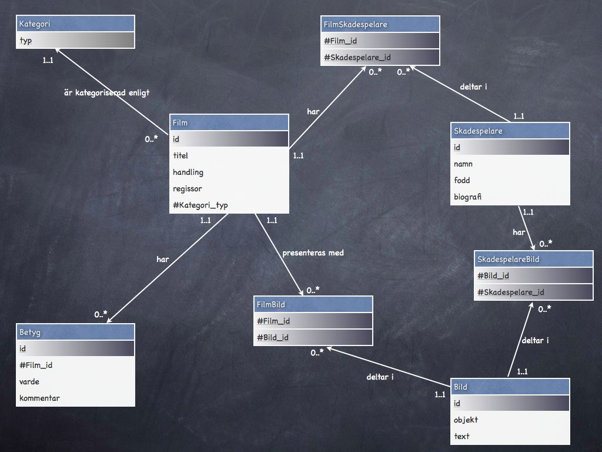
<figcaption>En modell av en databas via ett ER diagram.</figcaption>
</figure>

</script>


<script data-role="slide" data-markdown type="text/html">
# Syfte med modellering

* Jobba fram en ritning för databasen
* Kommunicera med utvecklare, beställare och användare
* Ta reda på vilka tabeller och use-case som krävs för att lösa kravbilden

</script>


<script data-role="slide" data-markdown type="text/html">
# Jobba strukturerat

* Börja med en text som beskriver den verksamhet som skall modelleras
* Skissa på en modell som löser verksamhetens krav på en hög nivå
* Bestäm att modellen skall implementeras i en relationsdatabas och uppdatera
* Bestäm vilken fysisk DBMS som skall användas och generera SQL

</script>


<script data-role="slide" type="text/html" data-markdown class="center">
# Modellera stegvis i faser

<figure>

<figcaption>Tre faser med tre olika synsätt på modellen av databasen.</figcaption>
</figure>

</script>


<script data-role="slide" type="text/html" data-markdown class="titlepage center">
# Om att rita modeller
</script>


<script data-role="slide" type="text/html" data-markdown class="center">
# Olika sätt att rita modeller

<figure>
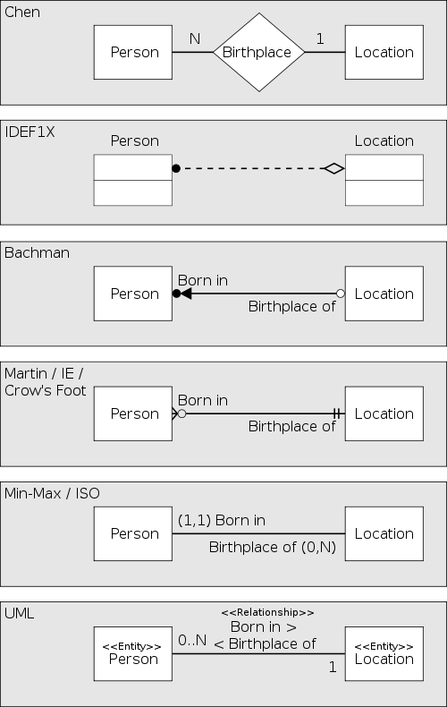
<figcaption>Välj notation för att rita och representera ER diagram.</figcaption>
</figure>

</script>


<script data-role="slide" data-markdown type="text/html">
# Diagram

* Entiteter
* Relationer
* Kardinalitet
* Attribut
* Kandidatnycklar
* PK, FK, fler attribut

</script>


<script data-role="slide" data-markdown type="text/html">
# Val av notation

* Välj utifrån det verktyg du använder
* Välj utifrån arbetsgruppen
* Ger en gemensam terminologi, synsätt och struktur
* Var redo att anpassa dig

</script>


<script data-role="slide" data-markdown type="text/html" class="titlepage center">
# Entity Relationship (ER)
## Tre faser och Tio steg
</script>


<script data-role="slide" data-markdown type="text/html">
# Modellering i tre faser

* Konceptuell modellering
* Logisk modellering
* Fysisk modellering

</script>


<script data-role="slide" data-markdown type="text/html">
# Konceptuell modellering

* Börja med en text
* Modellera oavsett tänkt databassystem
* Låt icke tekniska personer ta del
* Rita lådor, ringar och streck som binder dem samman
* Gissa vilka nycklar som kan fungera

</script>


<script data-role="slide" type="text/html" data-markdown class="center">
# Konceptuell modell (bild)

<figure>
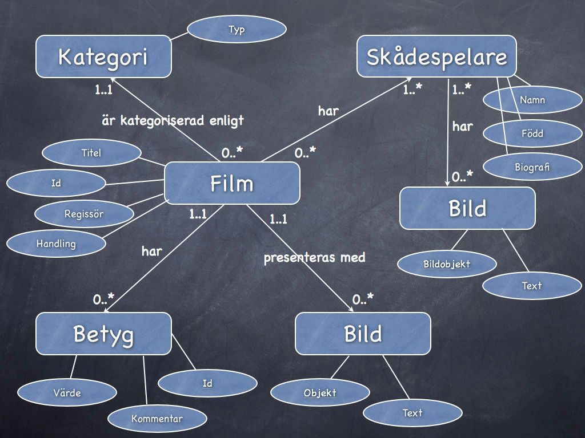
<figcaption>En konceptuell inklusive entiteter, relationer, kardinalitet, attribut och kandidatnycklar.</figcaption>
</figure>

</script>


<script data-role="slide" type="text/html" data-markdown class="center">
# Konceptuell modell (text)

* Film (id, titel, regissor, handling)
* Kategori (typ)
* Bild (objekt, text)
* Skådespelare (namn, fodd, biografi)
* Betyg (id, varde, kommentar)

<p class="footnote">Notera att texten nästan liknar en tabell.</p>

</script>


<script data-role="slide" data-markdown type="text/html">
# Logisk modellering

* Översätt modellen till relationsmodellen
* Tabeller, primärnycklar, främmande nycklar
* Datatyper

</script>


<script data-role="slide" data-markdown type="text/html">
# Översätt till relationsmodellen

* Inga många-många förhållanden (N:M)
    * Person äger hus, hus ägs av personer
* Inga komplexa relationer
    * Endast 1:1 eller 1:N
* Inga flervärdesattribut
    * Person har många telefonnummer
    * Endast ett värde i varje cell
* Varje rad är unik

</script>


<script data-role="slide" type="text/html" data-markdown class="center">
# Logisk modell (bild)

<figure>

<figcaption>En logisk modell, nu enligt relationsmodellen inklusive PK och FK.</figcaption>
</figure>

</script>


<script data-role="slide" type="text/html" data-markdown class="center">
# Logisk modell (text)

* Film (id, titel, regissor, handling, #Kategori_typ)
* FilmBild (#Film_id, #Bild_id)
* Kategori (typ)
* Bild (id, objekt, text)
* Skådespelare (id, namn, fodd, biografi)
* FilmSkadespelare (#Film_id, #Skadespelare_id)
* SkadespelareBild (#Bild_id, #Skadespelare_id)
* Betyg (id, #Film_id, varde, kommentar)

<p class="footnote">Nu liknar texten ännu mer likt en tabell.</p>

</script>


<script data-role="slide" data-markdown type="text/html">
# Fysisk modellering

* Översätt modellen till specifik databasmotor (RDBMS, tex MySQL eller Oracle)
* Skapa/generera SQL-kod
* Lista och beskriv de användarfall som finns
    * Hur kommer databasen att användas?

</script>


<script data-role="slide" data-markdown type="text/html" class="titlepage center">
# De tio stegen
</script>


<script data-role="slide" data-markdown type="text/html">
# Konceptuell modellering

1. Beskriv databasen i text
1. Skriv ned alla entiteter
1. Skriv ned alla relationer (matris)
1. Rita förenklat diagram (entiteter och relationer)
1. Komplettera diagram med kardinalitet
1. Komplettera diagram med attribut och kandidatnycklar

</script>


<script data-role="slide" type="text/html" data-markdown class="center">
# 1. Beskriv databasen i text

<figure>
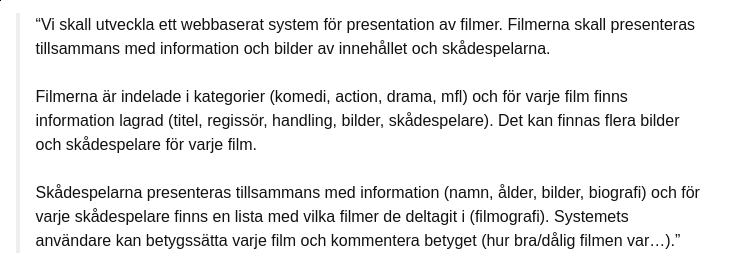
<figcaption>Man kommer långt med text.</figcaption>
</figure>

</script>


<script data-role="slide" type="text/html" data-markdown class="center">
# 2. Notera entiteterna

<figure>
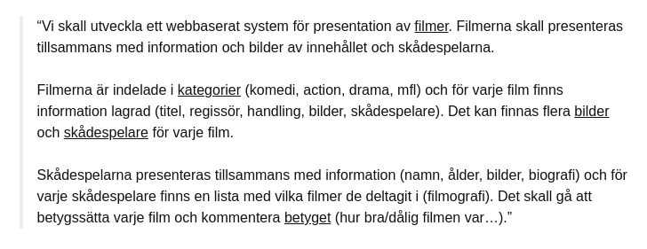
<figcaption>Stryk under det som skall lagras (entiteter).</figcaption>
</figure>

</script>


<script data-role="slide" type="text/html" data-markdown class="center">
# 3. Matris av relationer

<figure>
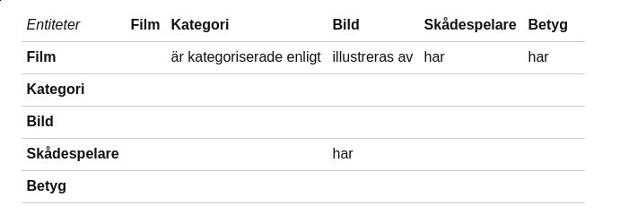
<figcaption>Försök finna de mest centrala relationerna.</figcaption>
</figure>

</script>


<script data-role="slide" type="text/html" data-markdown class="center">
# 4. Rita förenklat diagram

<figure>
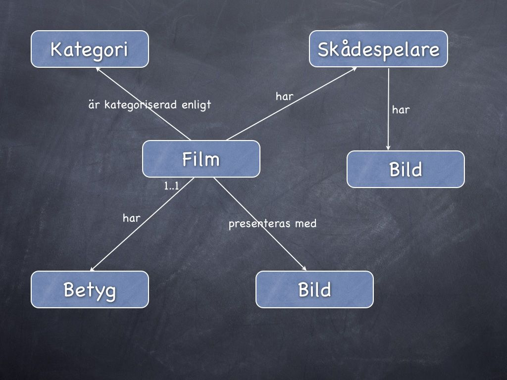
<figcaption>Rita förenklat diagram med entiteter och relationer.</figcaption>
</figure>

</script>


<script data-role="slide" type="text/html" data-markdown class="center">
# 5. Lägg till kardinalitet

<figure>

<figcaption>Komplettera diagram med kardinalitet.</figcaption>
</figure>

</script>


<script data-role="slide" type="text/html" data-markdown class="center">
# 6. Attribut och kandidatnycklar

<figure>

<figcaption>Komplettera diagram med attribut och kandidatnycklar.</figcaption>
</figure>

</script>


<script data-role="slide" data-markdown type="text/html">
# Logisk modellering

7\. Modifiera ER-diagrammet enligt relationsmodellen

8\. Utöka ER-diagrammet med primära och främmande nycklar samt kompletterande attribut

</script>


<script data-role="slide" type="text/html" data-markdown class="center">
# 7. Till relationsmodellen

<figure>
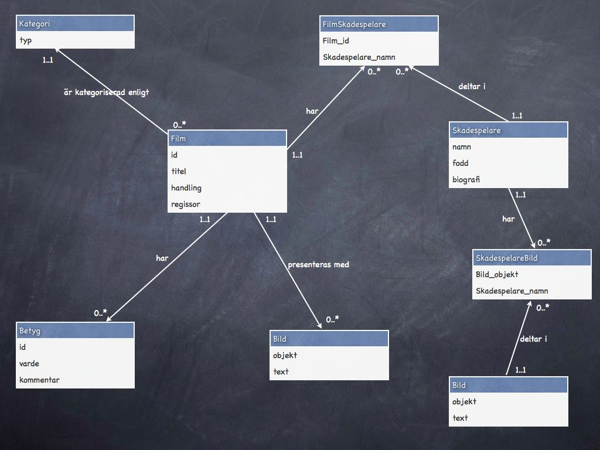
<figcaption>Modifiera ER-diagrammet enligt relationsmodellen.</figcaption>
</figure>

</script>


<script data-role="slide" type="text/html" data-markdown class="center">
# 8. PK och FK

<figure>

<figcaption>Utöka ER-diagrammet med primära och främmande nycklar samt kompletterande attribut.</figcaption>
</figure>

</script>


<script data-role="slide" data-markdown type="text/html">
# Fysisk modellering

9\. Skapa SQL DDL för tabellerna

10\. Lista funktioner som databasen skall stödja (API)

</script>


<script data-role="slide" data-markdown type="text/html" class="titlepage center">
# För att summera
</script>


<script data-role="slide" data-markdown type="text/html">
# Följ processen

* Stöd när man organiserar databasen
* Stöd för att dokumentera den inledande fasen
* Lättare att blanda in fler personer från olika områden

</script>


<script data-role="slide" data-markdown type="text/html">
# Rita ER

* På papper eller med verktyg
* Draw.io (app.diagrams.net)
* Dia Diagram Editor

</script>


<script data-role="slide" type="text/html" data-markdown class="center">
# Draw.io konceptuell

<figure>
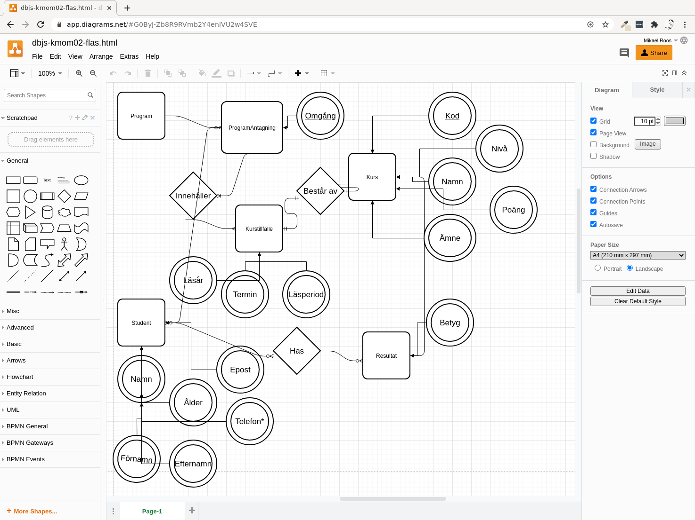
<figcaption>En konceptuell modell med Draw.io.</figcaption>
</figure>

</script>


<script data-role="slide" type="text/html" data-markdown class="center">
# Draw.io logisk

<figure>
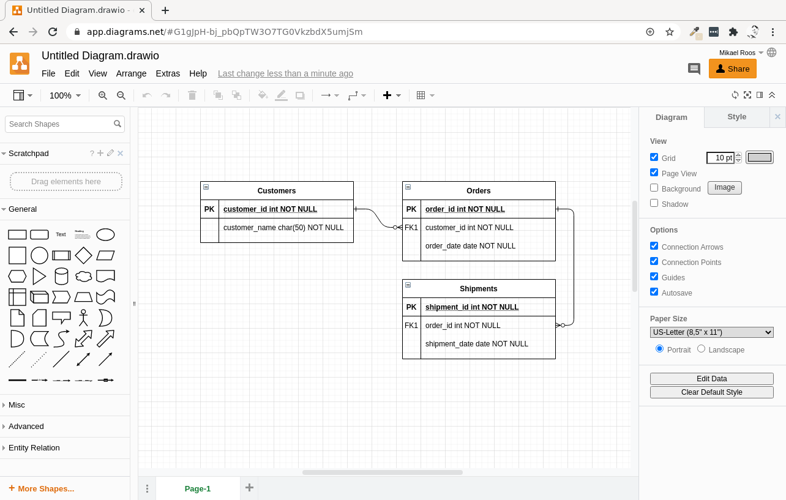
<figcaption>En logisk modell med Draw.io.</figcaption>
</figure>

</script>


<script data-role="slide" type="text/html" data-markdown class="center">
# Dia Diagram Editor

<figure>
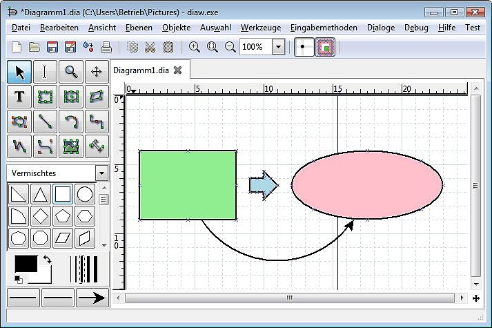
<figcaption>Webbplatsen för Dia finns på http://dia-installer.de/
.</figcaption>
</figure>

</script>


<script data-role="slide" data-markdown type="text/html">
# Förväntningar ER dokument

* Konceptuell modell är första steget
* "Gör det vackert"
    * Framsida, titel, bild, författare, epost
    * Innehållsförteckning
    * Varje steg startar på en ny sida?
* För databasens design eller för att visa att man kan jobba enligt processen?

</script>


<script data-role="slide" data-markdown type="text/html">
# Industrin

* Föregås av en verksamhetsanalys
* Konceptuell ER som en del av verksamhetsanalys
    * Kan göras av systemanalytiker, nära kund och användare
* Logisk ER konsekvens av en konceptuella analys
* Skippa modelleringsfasen helt i enkla fall
* Dokumentation viktig för att kunna visa framsteg, säkra sin egen rygg och fakturera

</script>


<script data-role="slide" data-markdown type="text/html">
# Forskning

* Modeling graph database schema
* Model driven reverse engineering of NoSQL property graph databases: The case of Neo4j
* Logical design of graph databases from an entity-relationship conceptual model
* Knowledge-based intelligent tutoring system for teaching mongo database
* NoSQL database design using UML conceptual data model based on Peter Chen's framework

<p class="footnote">Titlar på forskningspapper om databasmodellering.</p>

</script>


<script data-role="slide" data-markdown type="text/html" class="titlepage center">
# Slut
</script>


<script data-role="slide" data-markdown type="text/html">
<!-- empty slide by intention -->
</script>
